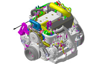

Motores leves
Até 3.0 litros. Eletrônicos, oferecem excelente performance nas mais diferentes faixas de potência, com elevado torque e baixo custo de manutenção.
-

- Motor Ragon WZ
- Cabeçotes individuais com 4 válvulas por cilindro
- Uso: veicular
-
 - Modelo Ragon TY
- Cabeçotes individuais com 3 válvulas por cilindro
- Uso: veicular
-

- Modelo Delta
- Cabeçotes individuais com 6 válvulas por cilindro
- Uso: veicular, marítimo
Motores Médios
Até 6.0 litros. Performance, confiabilidade e durabilidade, com eficiência no consumo de combustível e baixo custo de manutenção.
-
- Modelo Dyna
- Cabeçotes individuais com 4 válvulas por cilindro
- Uso: agrícola
-
- Modelo Tork GU
- Cabeçotes individuais com 4 válvulas por cilindro
- Uso: agrícola, industrial
-
- Modelo Tork JA
- Cabeçotes individuais com 4 válvulas por cilindro
- Uso: industrial
Motores Grandes
Até 9.0 litros. Performance, confiabilidade e durabilidade, com eficiência no consumo de combustível e baixo custo de manutenção.
-
- Modelo Combo Alfa
- Cabeçotes individuais com 4 válvulas por cilindro
- Uso: marítimo
-
- Modelo Combo Beta
- Cabeçotes individuais com 4 válvulas por cilindro
- Uso: marítimo